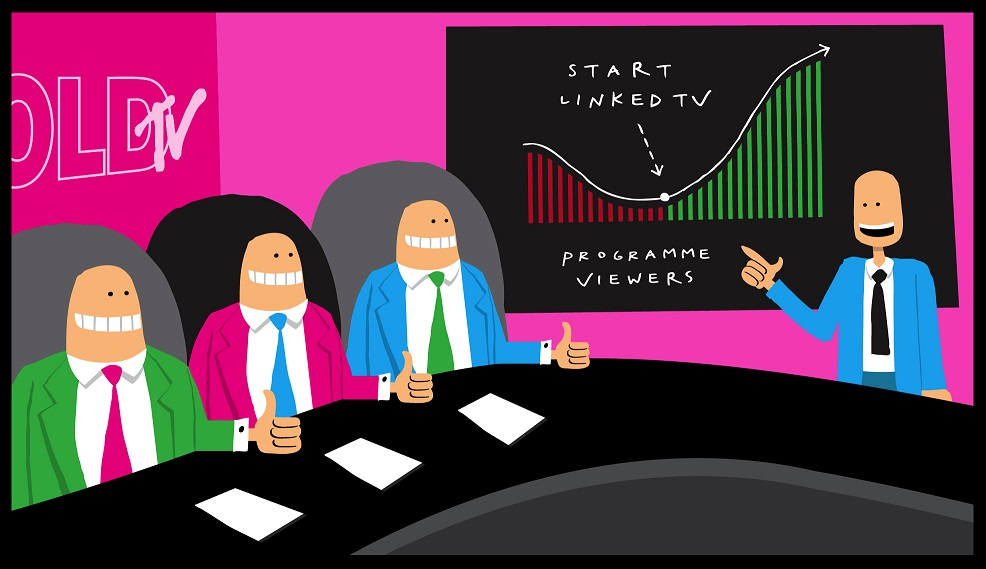

Linked Television is a new way to interact with your television. While watching a TV programme, Linked Television can provide you with the additional information and content you are interested in whenever you want it. And when you don't, you can just sit back and watch - LinkedTV won't bother you!
Increasingly TV viewing is taking place in parallel to surfing the Web on another device. When something of interest occurs in the TV, we search for more information or content online. However, what happens when we don't know how to search? And how do we select from all the content Google gives us back?
Linked Television is the solution. The innovative technology identifies the concepts and topics in the TV program for you, as well as selecting the most appropriate information and content to show you for each concept and topic.
LinkedTV offers broadcasters and other content owners a Platform which handles the full end to end workflow of video analysis, annotation and linking to content. Dedicated client applications can be built to use the Platform data, eased by using our own multiscreen toolkit to handle retrieval and synchronisation across screens.
Linked Television can add new value to older archived content, giving viewers a chance to rediscover programming. It can also enhance broadcast TV, with opt-in access to additional information during viewing.
|